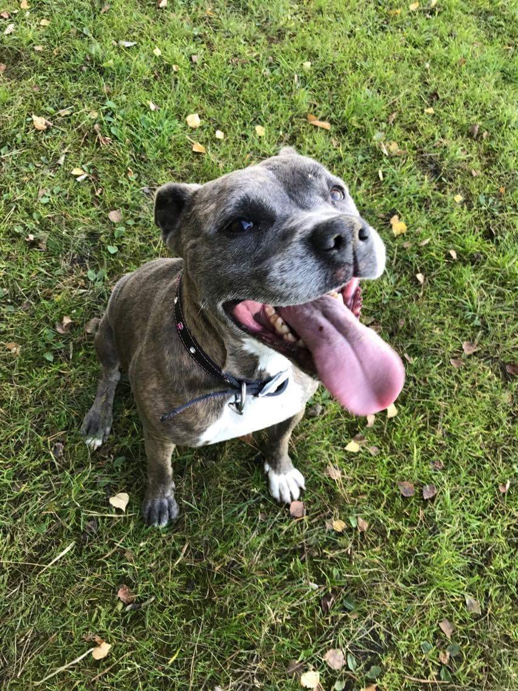

Hello, my name is Magda and I was born and raised in Poland. After I graduated High-School in Poland I decided to come to the United States for vacation. In fact, my vacation lasted so far 13 years 😂. Well during my vacation I decided to stay longer in the US and go to school to learn english. In those 14 years being here I met my husband, worked couple different jobs, became a United States citizen, still pursuing my academics and three years ago I started my dream job as a police officer. I know you might think I am crazy but that is a job I always wanted to do and I decided that I need to try. So far it was all worth it. At Lewis University, I am pursuing bachelor degree in Forensis Criminal Investigations/Minor in Natural Science and it is my last year.
 My family is big and they are the most important people in my life. I have two sisters and two brothers. Sadly, my two sisters and my mom are still living in Poland and miss them dearly. I am trying to visit them as often as I can, however due to my job and Covid-19 I wasn't able to go to Poland for around four years, now. But, if everything works out I will go to Poland next summer and most likely visit another country in Eurpe as well. Also, hopefylly my sisters will be able to visit me soon. In addition to my siblings, I have a niece and nephew that I love them dearly 💗. My nicece is 9 years old and my nephew is 4 years old and both of them like to play soccer. Oh and I can not forget about our beautifull dog Mika that lives with my sister now.
What I hope to Learn in this Course
Before taking computer science class I did not know much about computers and its technology. I only new how to use it for simple tasks but nothing advanced. I want to learn as much as I can but below is the list, I think, of most interesting topic I am looking forward to learn:
My Favorite Hobby
I guess my favorite hobby is traveling and hiking. I love to travel and discover new beautifull places as well as spending time with the nature. The world is so bueatiful that I would encourage everyone if they have time to go to visits new places and it doesn't have to be in a different country. The United States has many beautifull places as well. This year I went to visit Arizona, Utah, and Nevada. I fall in love with the weather and the scenery. Also, over the summer I visitied Sheboygan, WI. It is a small, peacefull and very nice town. In addition to travel I am interested in photography. I am still in learning mode but I alway trying to take as many pictures I can with different settings and pick what I like. As a kid and in my early teen years I used to draw so I am thinking to start drawing again.
Greatest Innovation
The history of computing can go as far as thousands of years ago. I would say is started with times where people started using number for any calculation. The technology changed drastically especially in last couple decades. Below are three from many greatest innovations. If you want to learn more about, click ona link next to innovation.
Fun Fact
A fun fact about me would be that I am Polish, I speak two languages and most likely I am the oldest student in our class.